01 / 06
01 / 06
Estrategias tecnológicas del recaudo
- Gestión de liquidación de impuestos
- Apoyo a la gestión del cobro persuasivo, coactivo y acuerdos de pago
- Actualización de bases de datos fiscales
Servicios
Integramos servicios y procesos tecnológicos para entidades públicas y privadas.
Ver todos los serviciosNuestra tecnología a su servicio
Comprendemos el funcionamiento del sector público; por eso, traducimos sus necesidades en soluciones articuladas con el sector privado.
Somos el aliado estratégico del sector público y privado para brindar soluciones + innovadoras basadas en tecnología.
Contamos con habilitación del Ministerio de Tecnologías de la Información y las Comunicaciones (MinTIC)
Impacto
Datos publicados en los casos de éxito de Valor+.
$4 billones
recaudados del impuesto vehicular de Antioquia entre 2021 y 2026
Ver la columna: recaudados del impuesto vehicular de Antioquia entre 2021 y 2026900+
cámaras integradas al nodo departamental de seguridad en 48 municipios
Ver el caso: cámaras integradas al nodo departamental de seguridad en 48 municipios925
sedes educativas rurales con servicio de internet operativo
Ver el caso: sedes educativas rurales con servicio de internet operativo94.000
cajas en custodia y más de 1,5 millones de imágenes digitalizadas
Ver el caso: cajas en custodia y más de 1,5 millones de imágenes digitalizadas758
sensores de iluminación inteligente en la vía Las Palmas
Ver el caso: sensores de iluminación inteligente en la vía Las Palmas2.161
usuarios actualizados en distritos de adecuación de tierras de la ADR
Ver el caso: usuarios actualizados en distritos de adecuación de tierras de la ADRConectividad rural
El proyecto busca reducir la brecha digital de las comunidades educativas rurales, a través de acciones de reactivación de los servicios de conectividad a internet en un aproximado de 1.228 sedes educativas.
Conoce el impactoServicios
01 / 06
 02 / 06
02 / 06
 03 / 06
03 / 06
 04 / 06
04 / 06
 05 / 06
05 / 06
 06 / 06
06 / 06
Casos de éxito
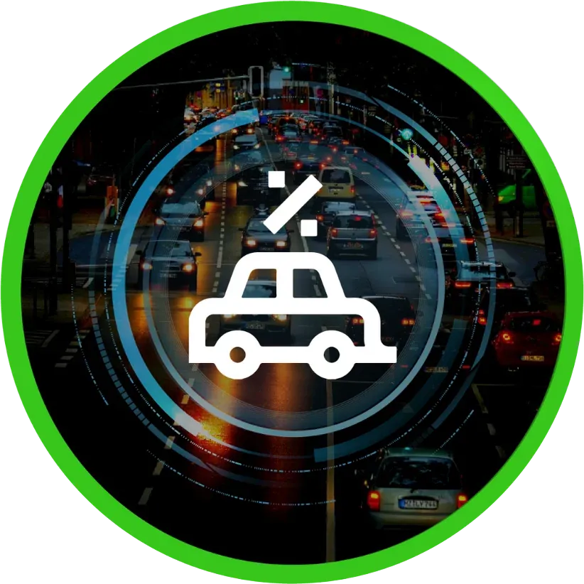
Operar y apoyar los servicios tecnológicos utilizando la plataforma ERP SAP y el portal web, para el correcto funcionamiento del impuesto vehicular…
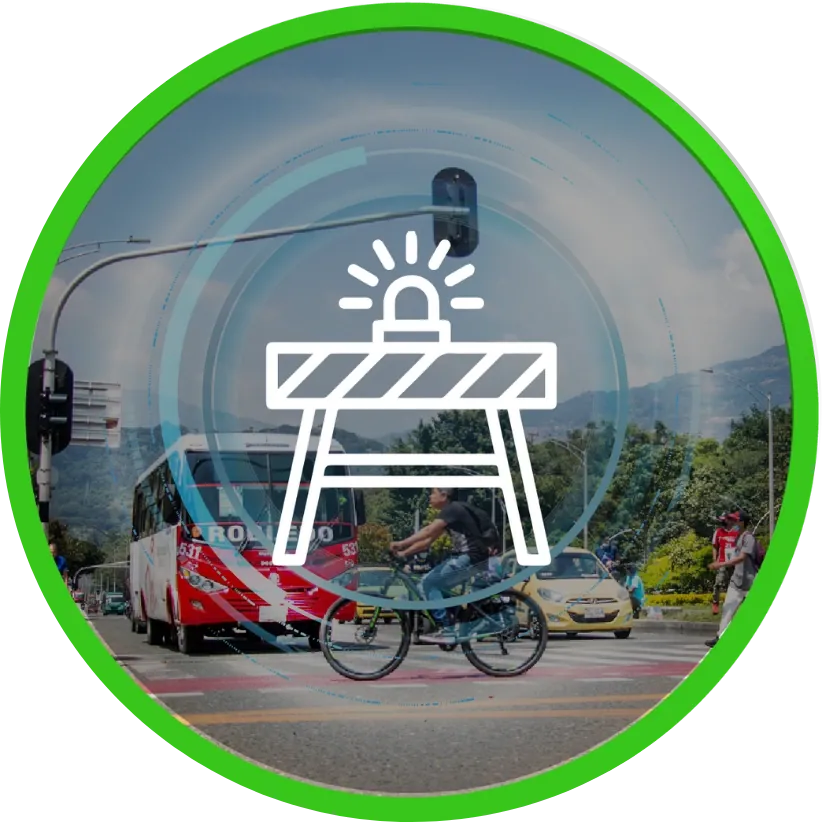
Implementar recursos tecnológicos y operativos para la ejecución y evolución de sus actividades bajo una estrategia de transformación del proceso de…
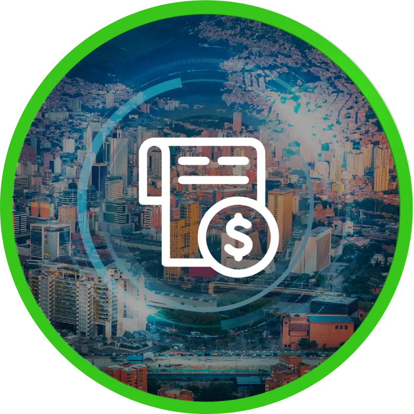
Prestar los servicios de apoyo integral para la cobranza, comunicación, notificación y demás actividades requeridas frente a los documentos emitidos…
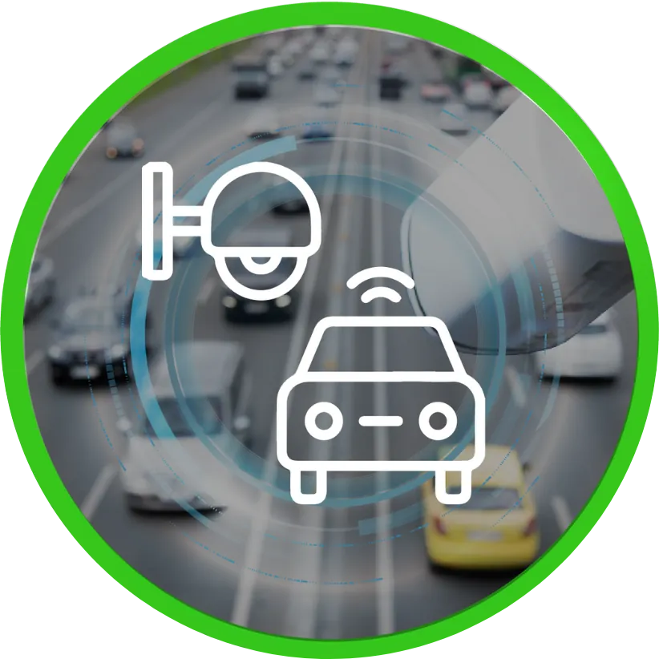
Prestar los servicios de apoyo integral a las notificaciones al proceso del debido cobrar de la secretaría de movilidad
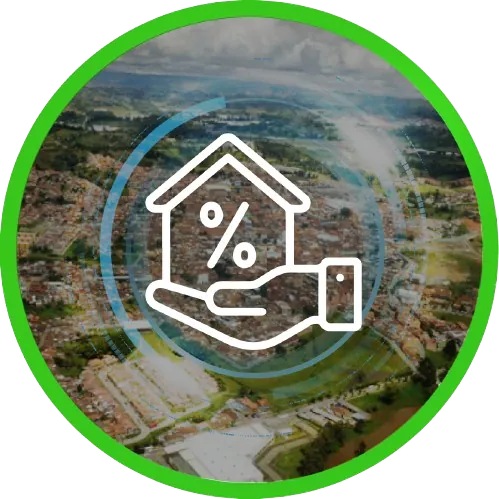
Apoyo tecnológico y operativo a la Dirección de Catastro del Departamento de Antioquia, con el fin de modernizar los servicios catastrales basados en…
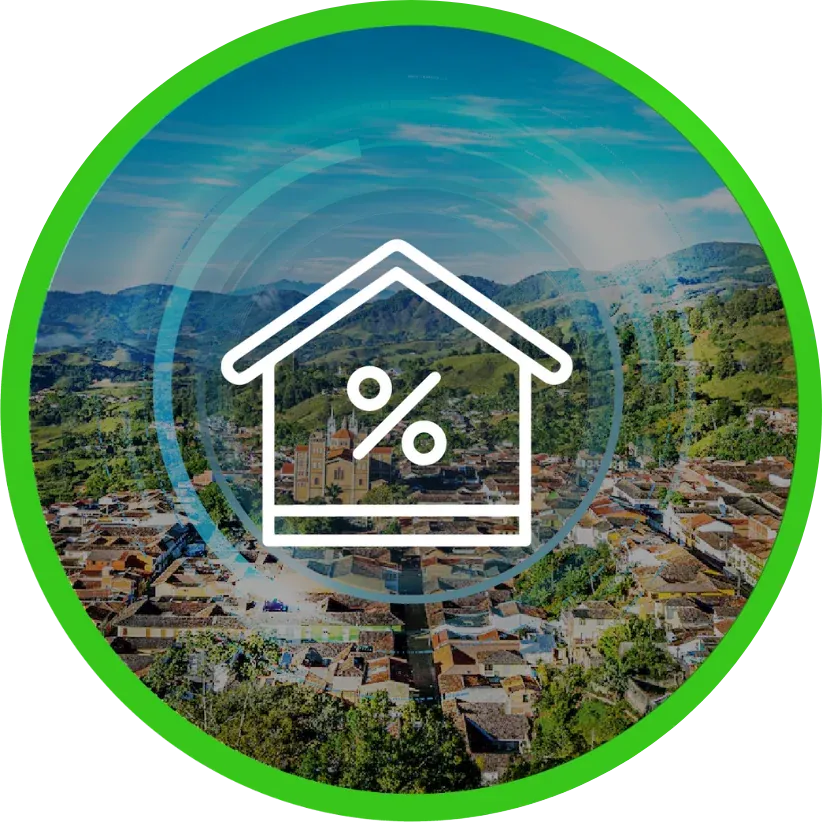
Mandato sin representación para el proyecto autonomía territorial y fortalecimiento fiscal de los municipios que hacen parte de catastro Antioquia,…
Prestar el servicio de gestión documental integral para el Departamento de Antioquia y la Contraloría General.
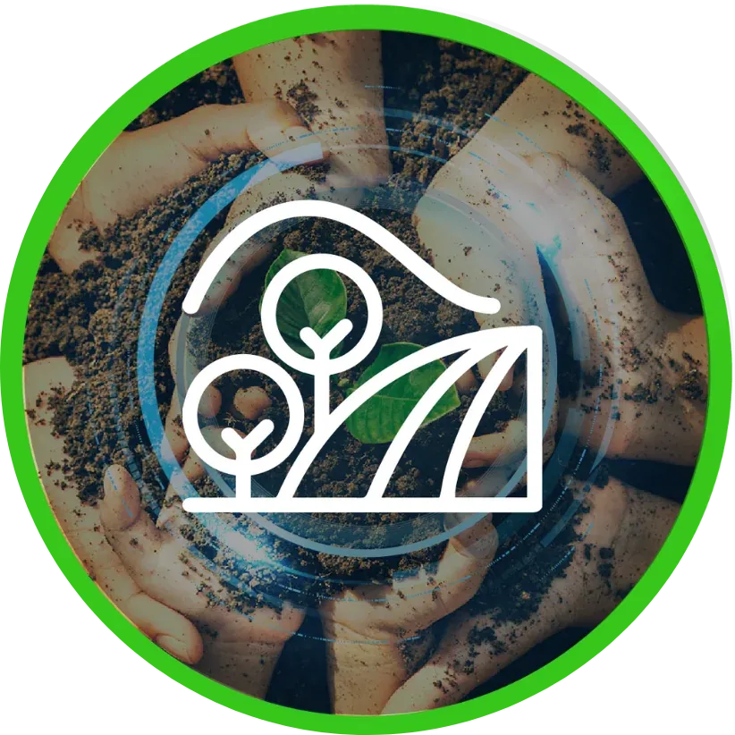
Constitución de un fondo especial de administración de recursos, destinados por la Agencia de Desarrollo Rural, a la actualización del Registro…
Modernización del sistema de Telegestión para el alumbrado público de la Vía Las Palmas
Implementación de estrategias para la transformación digital en el Departamento de Antioquia.
Prestación del servicio de apoyo tecnológico y operativo para la gestión de cobro persuasivo y recaudo de la cartera producto de los créditos…
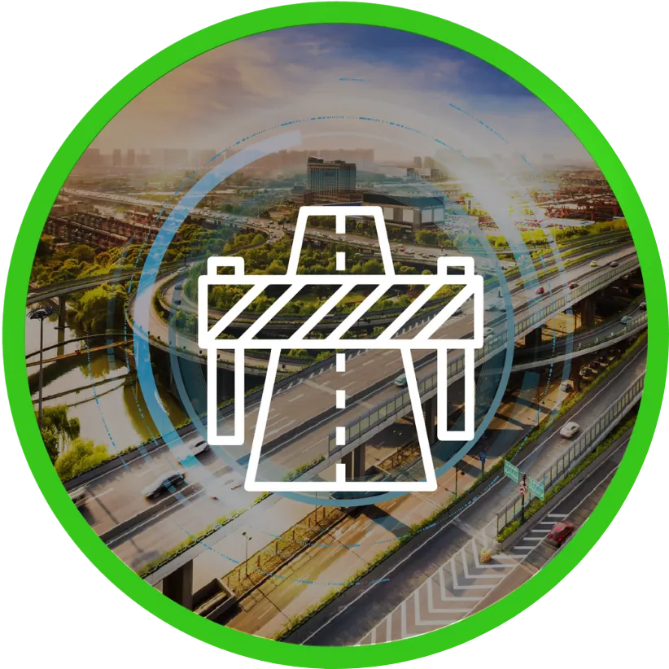
El IDEA apoya la estructuración de proyectos de inversión promovidos por el Departamento de Antioquia destinado recursos en este contrato para apoyar…
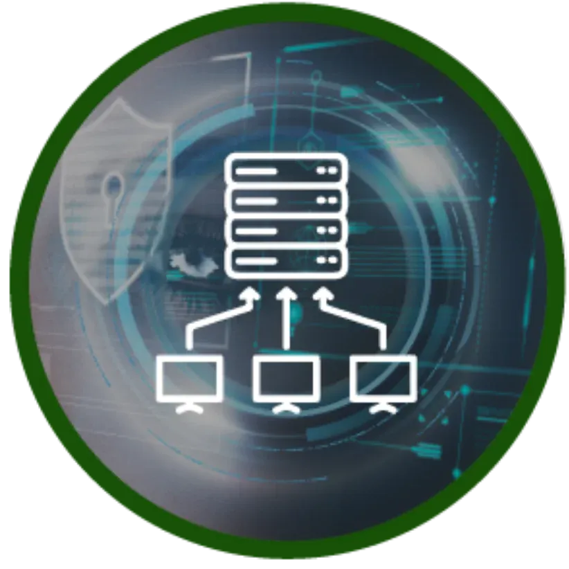
Contrato interadministrativo de administración delegada para mantenimiento preventivo, correctivo y soporte técnico del sistema integrado de…

Prestar el servicio para la administración y operación de la Mesa de Servicios de la Gobernación de Antioquia MEGANT, servicios de hosting…

Implementación de estrategias para la transformación digital en el Departamento de Antioquia.

Proveer soluciones de software personalizadas que respondan de manera óptima a las necesidades del mercado, con especialización en el sector público.…

Unidad Prestadora De Salud Antioquia requiere la contratación del servicio de CONTACT CENTER con el objeto de brindar atención a 51197 usuarios en…

Servicios para la administración y operación de la Mesa de Servicios de la Gobernación de Antioquia, servicios de hosting corporativos y servicios de…
Gerenciar la implementación,sostenimiento y operación de tecnología para la seguridad en los municipios del departamento de Antioquia
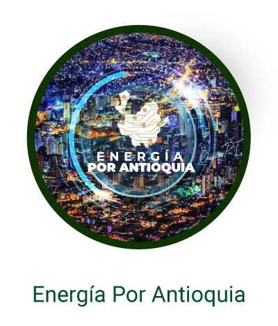
Transición e implementación de nuevas soluciones energéticas orientado al desarrollo de territorios seguros, sostenibles y equitativos.
Accesos rápidos
2.344 documentos publicados en 13 categorías.
Radica y consulta peticiones, quejas, reclamos, sugerencias y denuncias.
Rendición de cuentas y espacios de participación.
Permítenos conocer tus servicios para entregar + valor a nuestra gestión.
Únete a nuestro equipo de trabajo.
Descubre oportunidades para colaborar con nosotros en proyectos que impactan positivamente a la comunidad.
¡Únete a nuestras invitaciones abiertas!
Opinión · Última columna
“Antioquia no ha dejado de generar ideas, programas, proyectos e instituciones que responden a solución de situaciones cotidianas…”
Recaudo del impuesto vehicular
$4,0 billones
Total recaudado 2021–2026, según la columna.
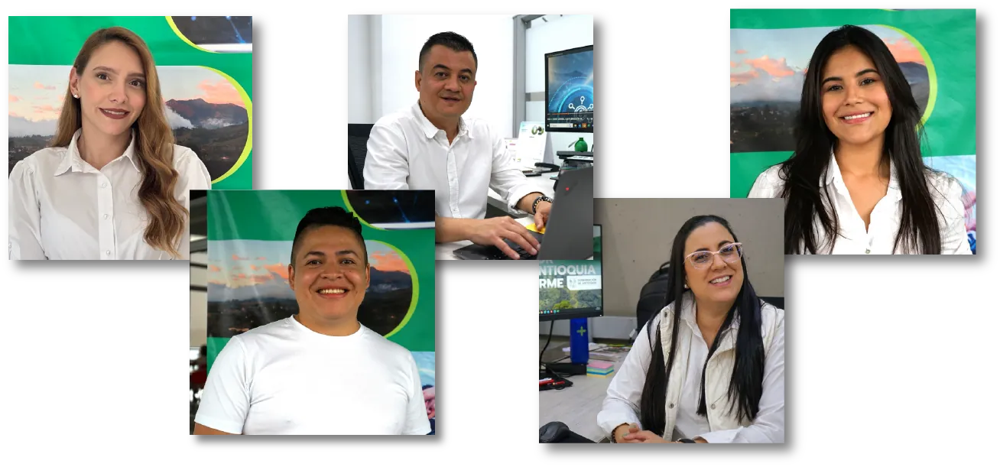
Acerca del equipo
Nuestro equipo de expertos en tecnología está comprometido con la excelencia, trabajando juntos para impulsar su éxito con soluciones innovadoras.
ConócenosConfían en nosotros
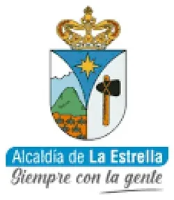
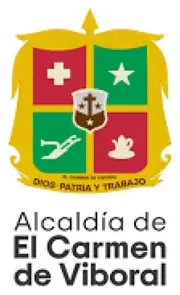
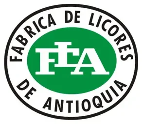
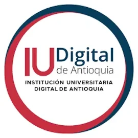
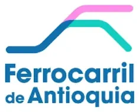
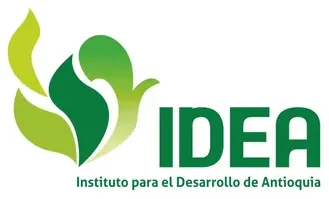
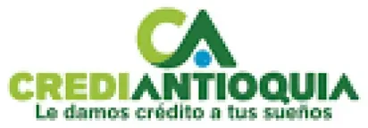
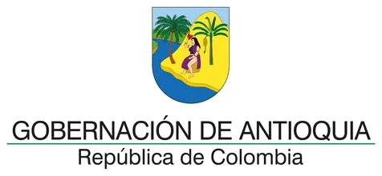
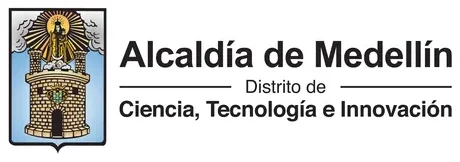
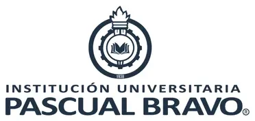
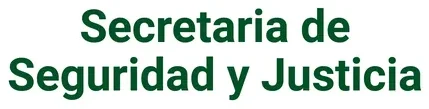
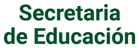
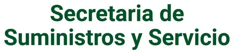
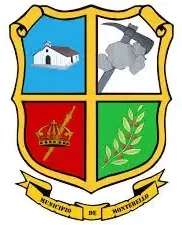
Prototipo de rediseño · Contenido tomado de valormas.gov.co